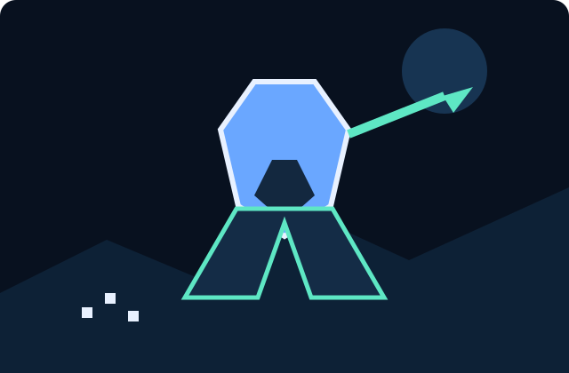

Automatic Combat
Combat resolution, damage, targeting, boss attacks, and wave progression are modeled as reusable systems.
ELECTRON · PIXIJS · RPG SYSTEMS
Taskbar Hero is a compact idle RPG prototype with automatic combat, hero recruitment, equipment, loot rarity, boss encounters, save/load, and a system-tray experience.

CORE FEATURES
Combat resolution, damage, targeting, boss attacks, and wave progression are modeled as reusable systems.
Rarity tiers, equipment slots, class restrictions, derived stats, inventory stacks, and loot generation.
Scaled enemy waves, role-based enemies, scheduled boss encounters, and enrage mechanics.
Recruit heroes, gain XP, level up, unlock skills, and maintain a persistent party state.
ARCHITECTURE
GameState
├── Party[]
│ └── Hero
│ ├── Stats{}
│ ├── Abilities[]
│ └── Equipment{}
├── Inventory[]
│ └── Item
├── Stage → Wave[] → Enemy[]
├── Dungeon → Floor[] → Encounter[]
├── Quest → Objective[]
└── SkillTree → Node[]The repository separates runtime behavior from content definitions. JavaScript modules implement systems while JSON definitions provide classes, enemies, abilities, biomes, and schemas. Type contracts and deterministic RNG make the systems easier to test and extend.
Browse source modules →ROADMAP
Combat, inventory, equipment, progression, loot, quests, dungeons, crafting, skills, AI, and save serialization.
Expand biomes, enemies, item tables, dungeon encounters, quests, bosses, and skill trees.
Polish PixiJS rendering, UI panels, effects, audio, sprites, icons, and responsive web presentation.